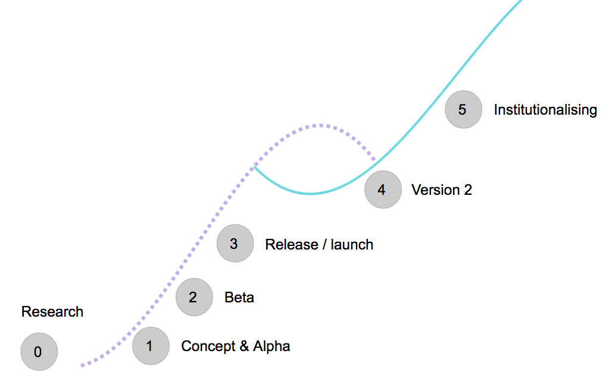

Adoption in theory and practice¶
Identifying adoption goals¶
In getting started we described the different goals of a standard. For some standards, successful adoption means having hundreds of datasets that are identical in their structure, the fields they use, and the way they use classifications. For other standards, successful adoption can tolerate very different uses of the standard, but comes through the way the standard leads to changes in organisational policies and practices for data collection and publication.
The learning section explores ways to evaluate adoption.
Pioneers, Settlers and Town Planners¶
When you develop a standard in the open, adoption may begin early: before you even have a beta complete. Once a standard is released, you will see different kinds of adopters, each with their own expectations and interests.
Simon Wardley's framework of Pioneers, Settlers and Town Planners is a useful tool to think about different kinds of standard adopters.
- Pioneers explore new, uncharted land. They try out and experiment with emerging standards. They build and innovate: but they also fail a lot, and their experiments and prototypes do not last long.
- Settlers turn the rough-and-ready ideas into something more stable. They understand the need to build innovations into existing structures, and to bring other people along with them. They prefer products to prototypes, and consider maintenance as well as initial construction.
- Town planners think big, considering how to scale up, and provide clear architectures and infrastructure for the long-term. They consider how a standard might be built into new systems, and design for institutionalisation.
Each group may be present at any point in a standards development, but they will have different expectations about the agility, governance, documentation and support availability for the standard. Whereas pioneers may want fast-moving development to respond to their needs, settlers want clear documentation they can work with, and the town-planners may look for signals that the standard is on track to long-term maintenance and governance.
Adoption and development: the second curve¶
To think about the interplay of development and adoption, it is useful to consider the following graph, based on Charles Handy's 'Second Curve' model.

At (1) and (2) a standard may have pioneer adopters. It will providing a 'minimum viable standard' and may be changing regularly. Data produced against the standard at an early stage may need to be substantially updated before it works with the release version of the standard. Pioneers at this stage may build demonstrator tools that show the potential of the standard: and these may even enter adoption, based on early standard drafts.
By (3) it is useful to have one or two 'settlers', early adopters, but working on stable adoptions that will act as case studies that can inspire other potential standard users.
If all goes well, more pioneers, settlers and town-planner adopters will then emerge, and there will be more and more adopters to support at various levels of intensity (depending on the goals and design of the standard).
It is quite likely that larger scale adoption will reveal areas where the standard can be improved. This may lead to pressure to develop and release a new version. This generally competes for resources with effort on supporting adoption, so as adoption scales up, it can be temping to dedicate all the resources to adoption, and few to standard development. When a new version is released, resources may be split across supporting two versions, and data interoperability may face a short-term dip. However, the message of the 'Second Curve' is that the time to iterate is before adoption peaks.
Revisions to a standard (4) may also focus on lowering the ongoing costs of supporting adoption, by removing features, tightening definitions or otherwise refining a standard. Done well, this should support a move towards longer-term institutionalisation (5) of the standard.
Not all standards will go through a cycle like this, but it's a useful model to keep in mind when planning adoption support, and the future roadmap for a standard.
Adoption models: self-service or supported¶
It is important to consider the adoption support model for any standard, and how this may change over time.
A supported implementation approach to standard adoption may involve a focus on:
- Outreach and engagement;
- Calls and workshops
- Helpdesk support
- Pilots and showcase projects
A self-service implementation approach to standard adoption may involve a focus on:
- Templates
- Guidance and tutorials
- Community forums
- Code samples, libraries and tools;
Both approaches should always be based on clear reference documentation (see Single Source of Truth pattern).
Often, a supported approach will be appropriate during the early development of a standard, where both the adopters, and the standard developers are learning about what makes for effective adoption. Over time, the emphasis may need to shift to a self-service adoption approach, in order to allow adoption to scale up.
There is an alternative strategy of 'consultant supported' adoption, in which a market emerges for adopters to buy in suitable implementation support. This can be complementary to self-service models.